ハイブリッドアーキテクチャ：SupabaseとSpring Bootによる両者のいいとこ取り
公開日: 14 January 2026
SupabaseのシンプルさとSpring Bootのパワーの間で選択するのではなく、両方を組み合わせてみませんか？それぞれの技術の長所を活かしたハイブリッドアーキテクチャをご紹介します。
- 強迫性障害
-
[]
現代建築の偽りのジレンマ
静的フロントエンドを使ってモダンなアプリケーションを構築するとき、しばしば二者択一の選択に直面することになります：
-
Backend-as-a-Serviceのソリューションにすべてを賭ける。(Supabase, Firebase) - シンプルだが制限がある
-
完全なバックエンドを構築する(Spring Boot, Node.js) - 強力だが複雑
この選択は誤った二択です。ハイブリッドアーキテクチャは第三の道を提案します： 各テクノロジーが得意とする場所で使用する。
建�築ビジョン
伝統的なアーキテクチャ: モノリシック
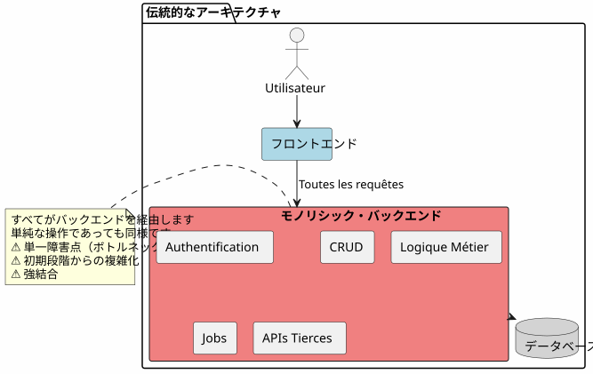
このアプローチでは、最も単純な操作（記事の読み込み、コメントの作成）であっても、すべてバックエンドを経由する必要があります。最初の日から複雑さのコストを支払うことになります。
BaaSアーキテクチャ：全代表者
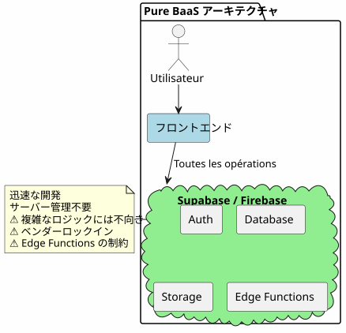
逆に、すべてをBaaSに委ねるのは最初は魅力的ですが、ビジネスロジックが複雑になるとすぐに限界が露呈します。
ハイブリッドアーキテクチャ: 責任の分離
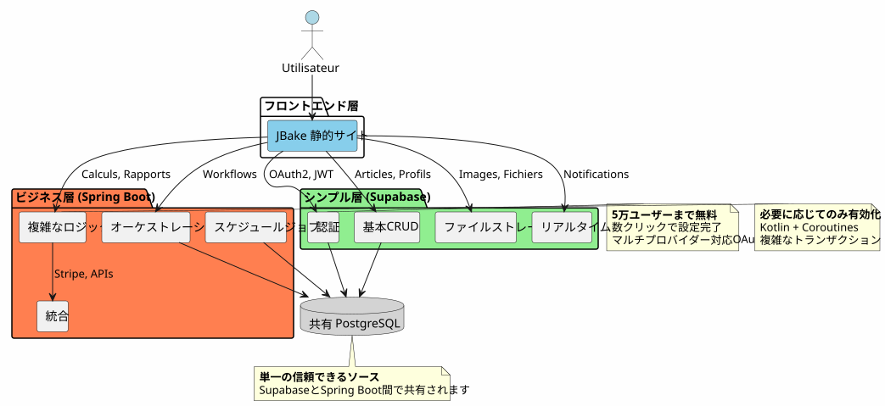
ハイブリッドアーキテクチャは、複雑さと操作の性質に応じて、責任をはっきりと分離します。
設計原則
原則1：シンプルに始め、賢く進化させる
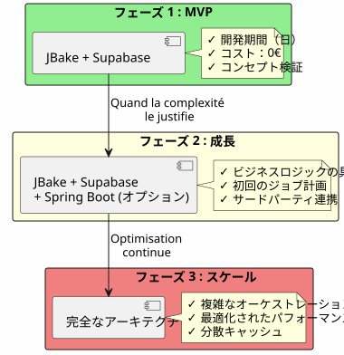
必要でなければ、Spring Bootを構築しないでください。Supabaseで始めて、複雑さが必要とされるときにSpring Bootを追加してください。
原則2 : 操作の性質による分離

原則 3 : 単一の真実の源
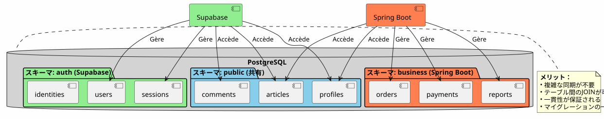
同じPostgreSQLインスタンスを共有することで、SupabaseとSpring Bootは複雑な同期なしに同じデータを扱います。
フローのオーケストレーション
フラックス 1: 中央認証
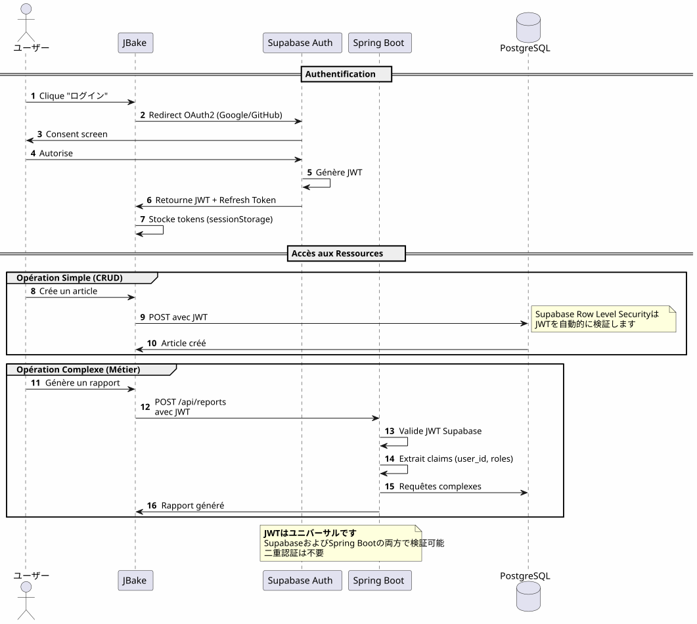
重要なポイント一つの認証プロセス、一つのJWT、どこでも使える。
フラックス 2 : ビジネスプロセスの複雑なオーケストレーション
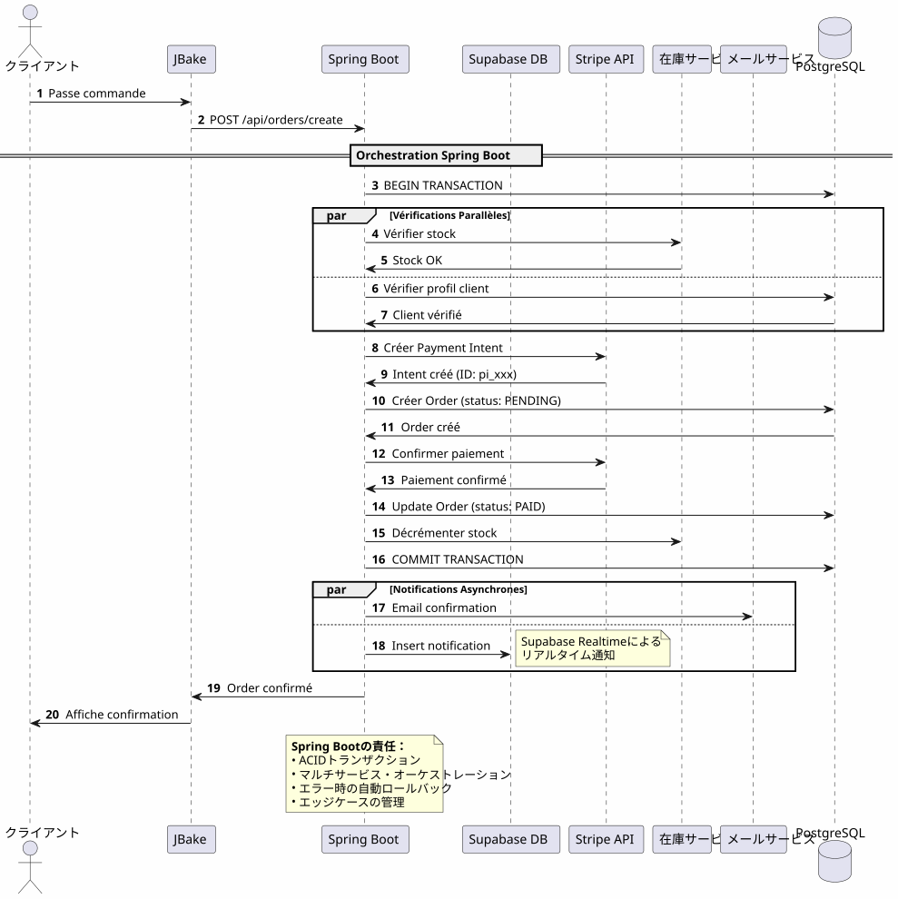
Spring Bootがもたらすもの: 信頼性の高い複数のシステムに関わる複雑なプロセスのオーケストレーション、トランザクション保証付き。
フラックス 3 : 予定されたジョブと同期
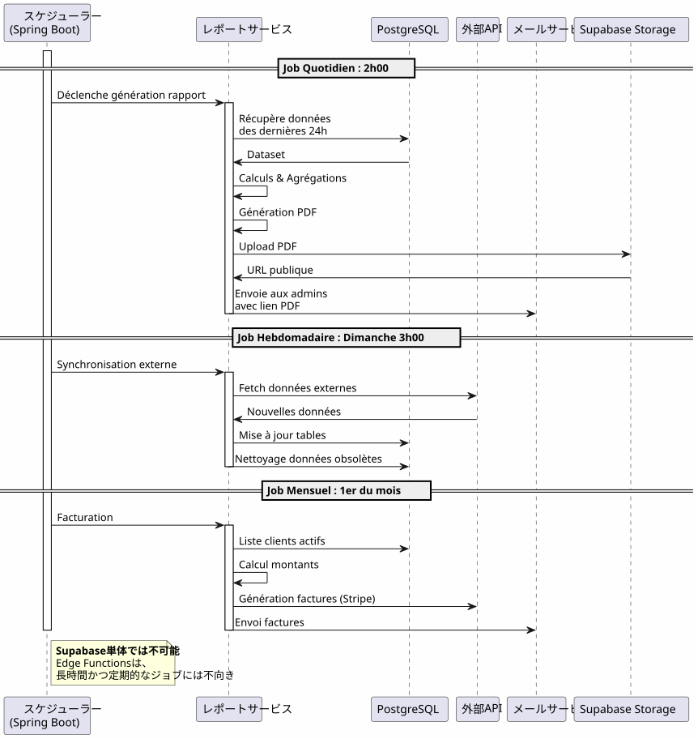
Spring Bootがもたらすもの: 状態管理、自動リトライ、および保証された実行を備えた信頼性の高いスケジュールされたジョブ
意思決定マトリクス
Supabaseを使うべき時は？

Spring Bootを使うべき時は？

プロジェクトタイプ別の建築例
ブログ / ポートフォリオ
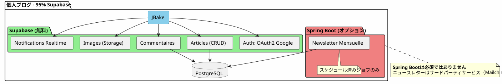
評決: 100% Supabaseは十分すぎるほどです。
SaaS アプリケーション
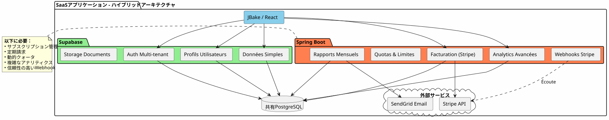
判決: ハイブリッドアーキテクチャが必要です。Supabase は基本部分に、Spring Boot はクリティカルな部分（支払い、請求）に使用します。
Eコマース
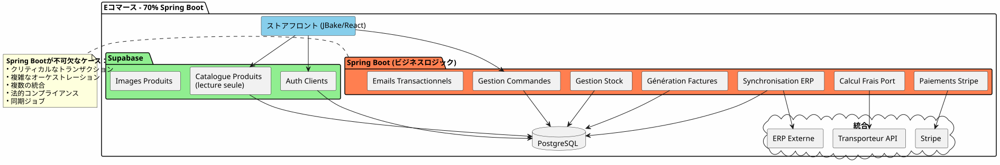
判決Spring Bootは不可欠です。Supabaseは認証とカタログのみに使用します。
段階的移行戦略
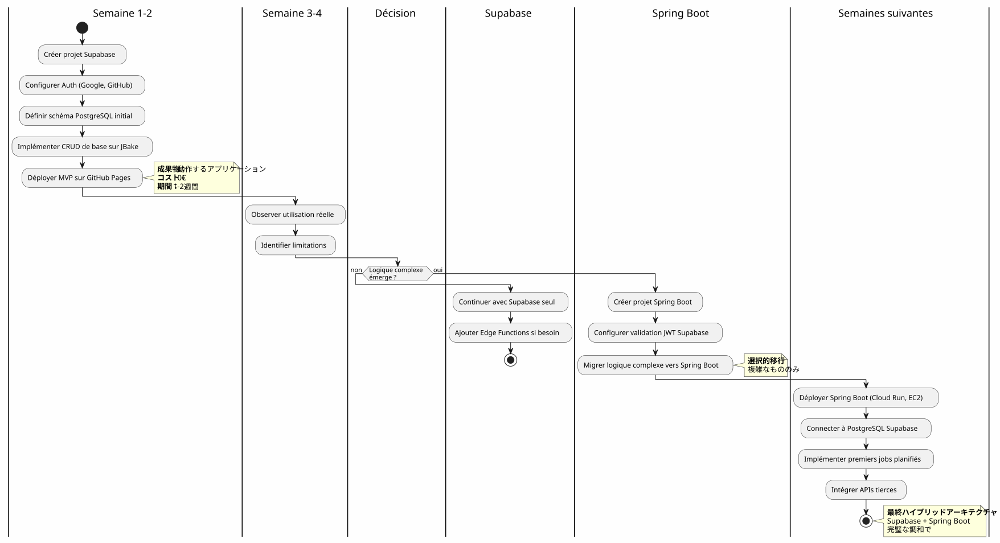
コストと運営上の考慮事項
コスト構造
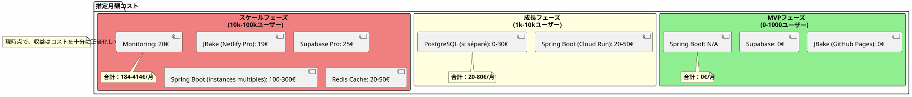
オペレーションの責任
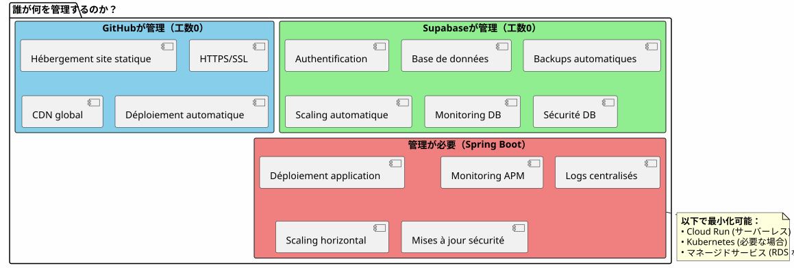
結論：完璧なバランス
Supabase + Spring Bootのハイブリッドアーキテクチャは妥協ではなく、これはシナジー.
覚えておくべき原則

このアーキテクチャを選ぶのはいつですか？
�✅ このアーキテクチャは理想的です、もし：
-
すぐに始めたい（MVPは日単位で、月単位ではない）
-
ビジネスの複雑さの増加を見越しています
-
初期コストを最小限に抑えたい
-
PostgreSQL が好きで、単一の真実のソースが欲しい
-
あなたはKotlinとコルーチンをビジネスコードのために気に入っています
-
あなたは完全なベンダーロックインを避けたい
�❌ このアーキテクチャは適していない場合：
-
あなたのプロジェクトはシンプルで、そのまま保たれます (個人ブログ → Supabase 100% で十分)
-
あなたは既にマスターしているバックエンドスタックを持っています。
-
あなたは伝統的なモノリスを好みます
-
.NET、Python、またはその他のバックエンド言語が必要です。
最終的な概観
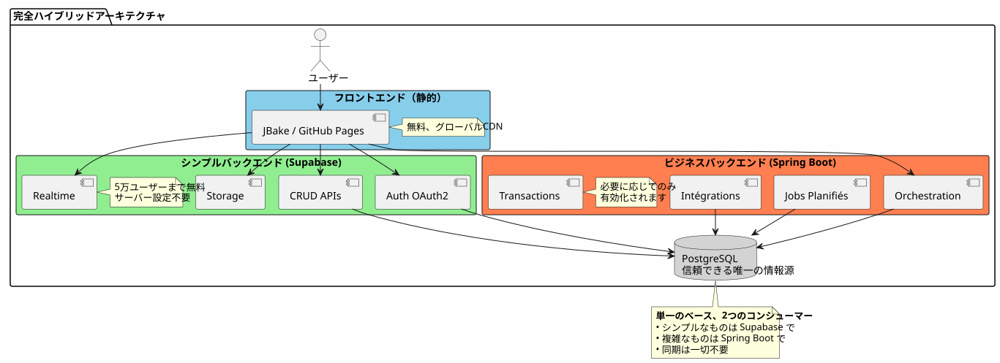
両方の世界のベスト
このアーキテクチャは、あなたに与えます：
🚀 Supabaseの速度
-
起動は時間単位、週単位ではない
-
数回クリックでOAuth2認証
-
自動生成されたREST API
-
ゼロ構成サーバー
💪 Spring Bootの力
-
Kotlin と コルーチン を使ったエレガントな非同期コード
-
複雑な業務プロセスのオーケストレーション
-
信頼できるスケジュールされたジョブ
-
ACIDトランザクションが保証されます
-
完全なSpringエコシステム
💰 プログレッシブ経済
-
0€開始および検証するために
-
成長に従うコスト
-
時期尚早な過剰設計なし
🎯 建築の柔軟性
-
段階的な移行、リフォームなし
-
Spring Boot は必要な場合のみ追加する
-
総ベンダーロックインはありません
-
進化的アーキテクチャ
さらに進む
技術的リソース
Supabase ドキュメント :
Spring Boot ドキュメント :
補足記事 :
-
JWTを使用したAPIセキュリティ
-
PostgreSQLのパフォーマンス最適化
-
段階的な移行パターン
-
分散アーキテクチャにおけるエラー管理
実際のユースケース
このハイブリッドアーキテクチャは、以下で成功裏に使用されています :
-
SaaS B2B: Supabase認証, Spring Boot 請求
-
マーケットプレイス: Supabaseカタログ, Spring Bootのトランザクション
-
コンテンツプラットフォーム: Supabase記事, Spring Bootアナリティクス
-
内部ツール: CRUD Supabase, ワークフロー Spring Boot
スタートアップチェックリスト
フェーズ 1 - 基礎 (第1週)
-
Supabaseアカウントを作成 - [ ] PostgreSQL プロジェクトを設定する - [ ] 認証を有効にする (Google, GitHub) - [ ] 初期スキーマを定義 - [ ] Row Level Security を設定する - [ ] JBakeからAPIをテストする
フェーズ2 - MVP (第2-3週)
-
主要ページを実装する - [ ] OAuth2認証を統合する - [ ] CRUDフォームの作成 - [ ] ファイル用のストレージを設定 - [ ] GitHub Pagesにデプロイ - [ ] 実際の条件でテストする
フェーズ3 - 進化（ニーズに応じて）
-
複雑なロジックのニーズを特定 - [ ] 必要に応じて Spring Boot プロジェクトを作成 - [ ] スーパーベースのJWTバリデーションを設定する - [ ] Supabase PostgreSQLに接続 - [ ] 複雑な機能を移行する - [ ] スケジュールされたジョブを実装する - [ ] Spring Boot をデプロイ (Cloud Run など)
避けるべきアンチパターン
❌ しないで :
-
SupabaseとSpring Boot間でデータを複製する
-
PostgreSQLの別々のデータベース2つを作成
-
自分で認証をコードしてください
-
Spring Bootを使ってシンプルなCRUDを実装する
-
最初からオーバーアーキテクトする
-
SupabaseのRow Level Securityを無視
むしろやる:
-
単一のPostgreSQLデータベースを共有する
-
Supabase に認証を任せる
-
Spring Bootを複雑さのためだけに使用する
-
シンプルに始めて、徐々に進化させる
-
各テクノロジーの強みを活用する
-
データベースレベルのRLSで保護する
進化の展望
新しい機能の追加
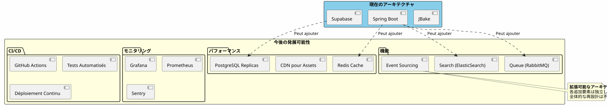
水平スケーリング
アプリケーションが成長すると、ハイブリッドアーキテクチャは自然にスケールします：
Supabase：
-
自動的に何百万回もの操作にスケールします
-
読み取りレプリカ（読み取りパフォーマンス用）
-
セキュリティのためのポイントインタイムリカバリ
Spring Boot：
-
ロードバランサーの背後に複数のインスタンス
-
ステートレス設計は水平スケーリングを容易にする
-
必要に応じて、Kubernetesをオーケストレーションに使用する
PostgreSQL：
-
大規模なテーブル用のパーティショニング
-
接続プール (PgBouncer)
-
シャーディングは本当に必要です（稀）。
建築的証言
スタートアップ SaaS (50k ユーザー)
_ 私たちはSupabaseで100%スタートしました。5kユーザーに到達したとき、Stripeの請求と月次レポートのためだけにSpring Bootを追加しました。1年後、私たちの操作の80%はまだSupabaseを経由しています。Spring Bootはクリティカルな部分のみを管理します。この分離により、リファクタリングを行わずにスケールすることができました。 _
Eラーニングプラットフォーム (10k ユーザー)
_ SupabaseのOAuth2認証により、開発に3週間の時間を節約できました。自動生成されたAPIが、コースカタログ全体を管理しています。Spring BootはPDF証明書と進捗メールにのみ使用されています。シンプルで保守性が高く、拡張性のあるアーキテクチャです。 _
B2Bマーケットプレイス（3kユーザー）
_ Spring Bootは、買い手と売り手の間のトランザクションを管理します（重要）。Supabaseは、残りのすべてを管理します：プロフィール、リアルタイムメッセージング、ドキュメント。同じPostgreSQLデータベースを共有しているため、複雑な同期を避けることができます。これは、私たちがこれまでに行った中で最高のアーキテクチャ選択です。 _
要約：モダンな建築パラダイム
Supabase と Spring Boot を組み合わせたハイブリッド アーキテクチャは、新しいパラダイムを示しています：建築分野の専門化。
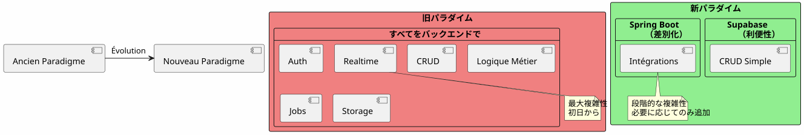
基本原理 :既にサービスとして存在するものを構築しないでください。あなたのアプリケーションを差別化する点に集中してください。
80/20の法則
ほとんどのアプリケーションでは：
-
80% の操作標準のCRUDです → Supabase
-
20% の操作ビジネスロジックが必要です → Spring Boot
この自然なルールはハイブリッドアーキテクチャを正当化します。
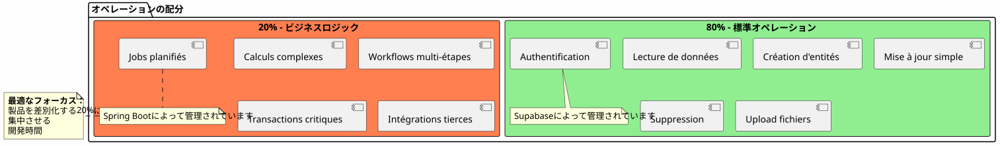
最終結論
ハイブリッドアーキテクチャは技術的な妥協ではありません。それは戦略的決定。
したがって、あなたは以下のことができます：
-
✅ 機能的なMVPで素早く始める
-
�✅ 市場を検証する 重大な投資なしで
-
複雑さが求められるときに段階的に進化する
-
各段階でコストを管理する
-
各テクノロジーのベストを活用する
-
�✅ 過早なオーバーエンジニアリングを避ける
-
�✅ 将来のために柔軟性を保つ
彼女が表す：
-
🎯実用主義彼女が得意とするすべての技術
-
🚀速度: 最小のタイム・トゥ・マーケット
-
💰経済価値に合わせたコスト
-
�🔮拡張性: アーキテクチャはあなたと共に成長します
-
�🛡️堅牢性実績のある信頼できるサービス
あなたの次のステップ
このアーキテクチャがあなたに響くなら、ここで始める場所はこちらです：
-
Supabaseアカウントを作成してください(無料)
-
最小限のデータスキーマを定義してください
-
OAuth2認証を設定してください
-
最初のJBakeページを作成し、APIを消費する
-
GitHub Pagesにデプロイしてください
機能するMVPが手に入ります数日.
Spring Boot は必要になったとき自然にやってきます。それより前ではない。
ハイブリッドアーキテクチャとは、必要なものを必要なときに正確に構築することである。
良い開発を！ 🚀
この記事を、他の開発者が適切なアーキテクチャの選択をするのに役立つと思う場合はシェアしてください。
関連記事
31 May 2026